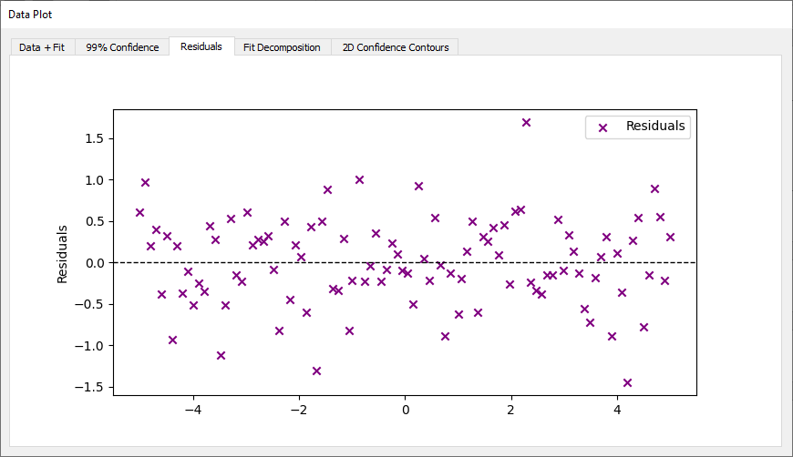
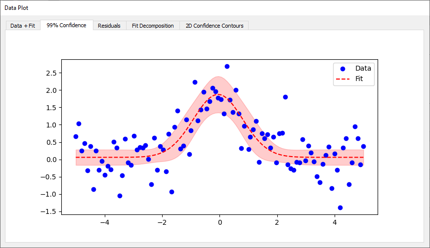
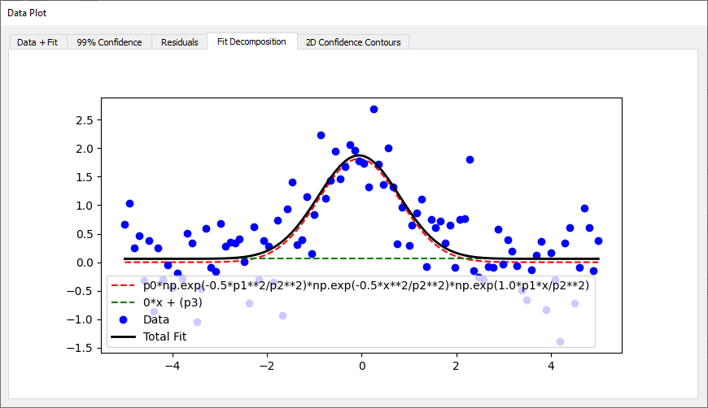
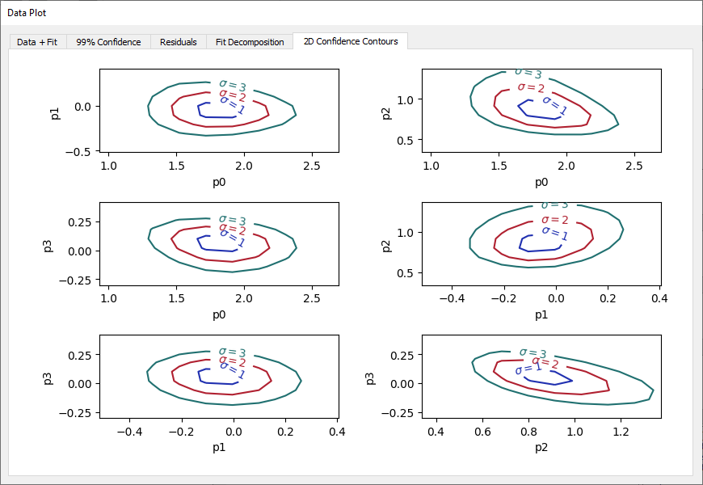

Fit Results
After a fitting process is completed, the application displays a full summary of the result, both numerically and graphically. This section describes each type of output available through the Results Dock and plot area.
1. Numerical Summary
The Results Dock shows detailed outputs such as:
-
Fit Report: Lists all estimated parameters along with their:
-
Best-fit values
- Standard errors (±)
- Units if available
-
Correlation matrix (if applicable)
-
Statistical Metrics:
- Chi-square (χ²): Total squared residuals, weighted if errors are given.
- Reduced χ²: χ² normalized by the degrees of freedom.
- Akaike Information Criterion (AIC) and Bayesian Information Criterion (BIC): Used to compare models by balancing error and complexity.
- Root Mean Square Error (RMSE): Square root of the mean squared residuals.
- R² (coefficient of determination): Fraction of variance explained by the model.
These values are updated immediately after any fit and can help assess the quality and reliability of the result.
2. Graphical Summary
The graphical representation is organized into multiple tabs in the Plot Area:
-
Fit Plot Displays the original data and fitted model curve. When component decomposition is enabled, individual terms of the formula (e.g., separate Gaussians) are overlaid.
-
Residuals Plot Shows
data - fitto identify systematic discrepancies.

- Confidence Band Visualizes uncertainty on the model as a shaded region (3sigma). This requires confidence interval computation to be active.

- Decomposition Plot Plots the individual terms of the symbolic model. This helps understand the role of each component.

- 2D Confidence Contours Displays elliptical regions in parameter space to illustrate correlations between pairs of parameters. Only available for fits made by lmfit.
